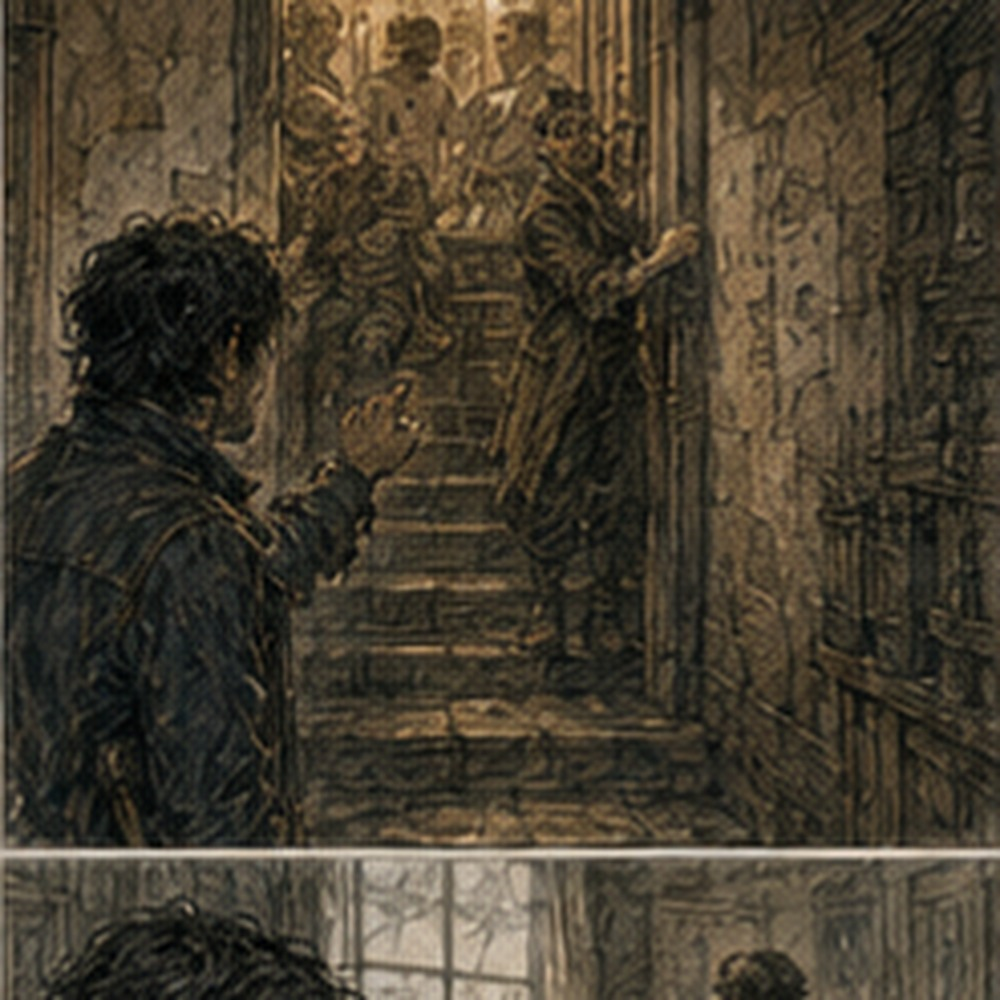

The thing at nine was a bath. This was not what the Guild runner had meant. I discovered that after spending the first part of the morning waiting at the west gate for an appointment that did not exist. The clerk there checked three boards. Then a fourth. Then looked at me.
“Nine what?”
“He said west gate. Nine.”
“Nine people?”
“I assumed time.”
“Why?”
“Because people usually use numbers for time.”
She stared. I reconsidered.
“Among other things.”
She checked the board again.
“No Greg.”
“Gregory?”
“No Gregory.”
“Lane support?”
“No lane work today.”
“Tavin?”
“East office.”
Of course.
“Did a runner come through yesterday?”
“Many.”
“One shouted at me.”
“That narrows it.”
I stood there with my wrapped hand and my repaired sword at my hip because I had dressed for the possibility of work. The clerk looked past me.
“Could have been Gate Nine.”
I turned. There were gates with numbers. I knew that. I had known that for years. Possibly decades. Carrow had changed the numbering twice in my remembered future. That was not useful.
“Where is Gate Nine?”
“North freight.”
I closed my eyes.
“Thank you.”
“You going?”
I considered. No. If somebody had sent a message badly enough that I had to reconstruct it from one shouted sentence, they could survive until they sent another.
“No.”
The clerk shrugged. Good. I walked away. I had no work. No appointment. No reason to be wearing a sword. The morning was warm already. My hand itched under Hessa's wrap. My hair felt dirty. Not philosophically. Actually dirty.
I had been on roads, in workshops, around kiln dust, under awnings, beside drains, moving a stove, holding route markers, and eating things with grease on them. I wanted a bath. The thought arrived without justification. I stopped. Wanted. Not needed. Not strategically useful. Not cheaper than washing from a basin. A bath. Hot water. Soap.
Maybe somebody else scrubbing the parts of my back that had become structurally inaccessible sometime around age forty. I was nineteen. My back was accessible. Still wanted the bath. Good. There was a public bathhouse near the old cloth market. I remembered it. Probably.
The building I remembered had blue tile around the entrance and a cracked stone fish over the door. The current building had green tile. No fish. Same location. Maybe.
A sign said:
WASH
SOAK
STEAM
TOWEL EXTRA
This seemed promising. I went in. A broad woman behind the counter looked at my sword.
“Rack.”
I put it in the weapon rack. She looked at my hand.
“Keep the wrap dry.”
“I know.”
“Then why are you looking at the soaking room?”
“I can keep one hand out.”
“You'll forget.”
“I won't.”
She looked at me. I had no evidence.
“How much?”
“Wash and soak, three copper. Steam another one. Towel one.”
I thought about the orange. Then stopped thinking about the orange.
“Wash, soak, steam, towel.”
She held out her hand. Five copper. I paid. Nothing happened. No alarm. No creditor appeared. The economy survived. Excellent. She gave me a wooden token, a folded towel, and a small lump of soap.
“Men's side left.”
I went left. The changing room had benches along the walls and hooks above them. Three men were already there. One old. One my age. One perhaps thirty with shoulders that suggested he carried sacks for money. Nobody cared about me. I undressed. That should not have been interesting. It was. The body in the mirror was mine. Still strange. Less strange than before.
Lean. A little more filled out than the first morning, maybe. Or I was standing differently. Scars that had not happened yet were absent. The leg was there. Both legs. I looked away. Not because that thought was dangerous. Because I had come here to bathe.
The wash room had stone floors, low stools, buckets, and taps fed from heated tanks. Steam hung near the ceiling.

I sat. The water was hot enough to make me swear. The sack-carrier laughed.
“First time?”
“In this body.”
He looked at me. I looked at him.
“Since winter,” I corrected.
“Right.”
Good. I washed. Hair first. Then face. Beard. The uneven young beard still irritated me. It grew like it had not yet decided what kind of beard it wanted to be. I had spent years with a beard that knew its job. This one was an apprentice. Soap in eyes. Pain. I rinsed. The wrapped hand stayed mostly dry. Mostly.
The woman at the counter would be unbearable if she saw. I scrubbed road grit from my calves. Clay dust from my forearms. Something dark from behind one knee that might have been mud from Turnip. That seemed unlikely. Still.
I washed until the water running off me stopped changing color. Then I went to the soak. The pool was long enough for maybe twelve people. Five were in it. I lowered myself into the water. Every muscle in my back relaxed at once.
“Oh.”
A man across from me opened one eye. I ignored him. The water reached my chest. I kept my wrapped hand on the stone edge. This was excellent. I had forgotten baths could be excellent. Old Greg had used private baths. Better water. Better soap. Sometimes attendants. Sometimes wine. Sometimes people who wanted something. There had been schedules. Security. Meetings afterward. Before.
During, once. Bad meeting. This was better. Maybe not objectively. Objectivity had failed. I sank lower. My body liked heat. This was information. Not useful information. Still information. I closed my eyes. Someone splashed me. I opened them. Jorren was standing at the edge of the pool. Of course.
He wore a towel around his waist and an expression of profound disappointment.
“You.”
“Me.”
“You paid for this?”
“Yes.”
“Why?”
“I wanted a bath.”
He stared. I stared back.
“Are you sick?”
“No.”
“Did Hessa tell you?”
“No.”
“Antonius?”
“No.”
“Woman?”
“No.”
His eyebrows went up.
“Man?”
“No.”
“Then why?”
“I wanted a bath.”
He sat on the edge.
“That's worse.”
“Get in.”
He did. Water displaced. He sighed.
“Fine.”
“See?”
“I didn't say you were right.”
“You made the sound.”
“What sound?”
“The correct sound.”
“Fuck you.”
Good. He leaned back. We sat. No problem. No contract. No one needed anything. After maybe a minute, Jorren said, “You missed Gate Nine.” I opened my eyes.
“What?”
He was grinning.
“You missed Gate Nine.”
“How do you know?”
“Runner found me.”
“Why you?”
“He thought I knew where you were.”
“Why?”
“He's seen us together.”
This was irritating.
“What did he want?”
“Nothing.”
I waited. Jorren's grin widened.
“What?”
“Gate Nine had nine empty return crates for West Storehouse.”
I stared.
“Nine was quantity.”
“Yes.”
“West gate?”
“West Storehouse.”
“He shouted west gate.”
“He says he shouted west crates.”
I closed my eyes. The bath was no longer enough.
“What was I supposed to do?”
“Rusk wanted to know if you were coming for debt hours.”
That was more reasonable.
“Did I owe hours today?”
“No.”
“Then why?”
“Two loaders didn't show.”
There. Not special. Not requested expertise. Labor.
“Did they solve it?”
“Yes.”
“How?”
“Other people.”
Good.
“Rusk angry?”
“Probably generally.”
“About me?”
“No.”
“Good.”
Jorren splashed water onto his face.
“You going later?”
I considered.
“I don't know.”
“You're in a bath.”
“Yes.”
“That's a no.”
It was. Interesting.
“No.”
Jorren looked at me. Not teasing now.
“Good.”
“Why?”
“You've been working every day.”
“Not every day.”
“Enough.”
“I have debt.”
“You also have skin.”
I looked at my blister. He pointed.
“Exactly.”
“That is not a financial argument.”
“I didn't make one.”
We sat again. A group of younger men came into the pool. Actually younger. Seventeen, maybe eighteen. One recognized Jorren.
“Dock rat.”
Jorren raised a hand.
“Roof thief.”
They laughed. No explanation. The boy looked at me.
“This Greg?”
I felt something tighten. Not fear. Expectation. Jorren said, “Unfortunately.” The boy grinned.
“Barrier Greg?”
There it was. I considered denying it.
“No.”
Jorren looked at me. The boy looked confused.
“You're Greg.”
“Yes.”
“And you do Barriers.”
“Sometimes.”
“So Barrier Greg.”
“No.”
“Why?”
“I don't like it.”
The boy accepted this immediately.
“Fair.”
Then he got into the pool and started arguing with his friend about whether a mule could climb a warehouse stair. Nobody asked me about magic. Excellent. Jorren leaned toward me.
“You hate that.”
“Yes.”
“Why?”
“It sounds stupid.”
“It is stupid.”
“Thank you.”
“That's why it's good.”
I splashed him. He splashed back. My wrapped hand got wet. I froze. Jorren saw.
“Oh.”
“Fuck.”
The counter woman had been right. I lifted the hand. Water dripped from the wrap. Jorren started laughing.
“Do not.”
“You promised yourself.”
“I did not promise.”
“You made the face.”
“What face?”
“The one where you're definitely right.”
I got out. The counter woman was waiting when I reached the changing room. I did not know how. She looked at the wet wrap. I looked at her.
“You forgot.”
“I was attacked.”
“By water?”
“Jorren.”
“Worse.”
She handed me a dry strip of cloth.
“Two copper.”
“For cloth?”
“For being right.”
“That is extortion.”
“One copper for cloth.”
I paid one. She smiled. I rewrapped the hand. Not as well as Hessa. Good enough for a bath. The steam room was smaller. Wood benches. Hot stones. A man poured water over them. Steam hit my face. My body objected. Then approved. Jorren came in behind me. We sat. Sweat started almost immediately.
“This is ridiculous,” I said.
“You paid for it.”
“Yes.”
“That makes it yours.”
Not how ownership worked. I let it go. We lasted perhaps ten minutes. Maybe less. Time was difficult when voluntarily cooking yourself. Outside, we dressed slowly. My skin felt too clean. My hair lay flat. The young beard looked worse wet. I rubbed it with the towel. Jorren watched.
“Cut it.”
“No.”
“Why?”
“I have had a beard for decades.”
He stopped. Right. He knew enough about me to hear that sentence differently. Not the whole truth. Not Hessa's truth. But enough history had leaked through Greg-shaped weirdness that he knew not to ask sometimes.

“You don't have that beard,” he said.
I looked at the mirror. He was right. I hated that. The beard on my face was not the beard I remembered. It was patchy at the cheeks and too thin under one side of the jaw. Young Greg had probably thought it looked rugged. Young Greg had been an idiot. I touched it.
“Maybe.”
Jorren smiled.
“Come on.”
“Where?”
“Barber.”
“No.”
“You said maybe.”
“That is not consent.”
“It is movement.”
He walked out. I followed. This was a mistake. The barber shop was two streets over. Jorren knew the barber. Of course. Her name was Mara. Not drink-shop Mara. Another Mara. Carrow needed more names.
She was short, perhaps sixty, with silver hair tied in a knot and forearms stronger than mine. She looked at my beard.
“No.”
I stared.
“Why does everyone say that to me?”
“Because you're making bad choices.”
Jorren laughed. I sat.
“I want to keep it.”
“Why?”
“History.”
She looked at Jorren. He shrugged.
“Don't ask.”
Mara lifted my chin.
“Keep chin. Clean cheeks. Shorten under jaw.”
I looked at the mirror.
“Will it look like a beard?”
“It will look intentional.”
That was better.
“How much?”
“Two copper.”
“Do it.”
Jorren sat by the door. Mara wrapped cloth around my neck. The razor came out. My body went very still. Not fear. Memory. Razors near throat had context. Several contexts. None relevant. Mara noticed.
“First shave?”
“No.”
“Then stop trying to climb out through the chair.”
I relaxed.
“Sorry.”
She worked. Scrape. Wipe. Scrape. Warm cloth. The sensation was intimate in a way I had forgotten. Not sexual. Trust. Someone held a blade at my throat because I had paid two copper and sat down. Ordinary civilization was insane. I liked it. When she finished, the face in the mirror looked younger. That was offensive. Also better.
The beard had become a narrow line at the jaw and chin instead of a failed argument with adulthood. Jorren whistled.
“Now you look nineteen.”
“Fuck you.”
Mara said, “You are nineteen.”
“Also fuck you.”
She laughed. I paid. Outside, I touched my face. Smooth cheek. Short beard. Strange. Wind touched skin that had been covered badly before. My body noticed. I noticed my body noticing. Jorren said, “Food.”
“I already ate.”
“Bath food.”
“What is bath food?”
“Food after a bath.”
“That is just food.”
“You're learning.”
We went to a place I had passed several times and never entered. Open front. Long tables. Flatbread cooked on a hot stone. Meat sliced thin. Pickled onions. Jorren ordered without asking me. I almost objected. Then smelled it. Fine. We sat. The food was excellent. Not strategic. No future memory. No famous cook. No hidden meeting. Just excellent. I ate too fast.
Jorren noticed.
“You like it.”
“Yes.”
“Good.”
I slowed. Why? Because I wanted it to last. That was stupid. Also correct. A woman at the next table looked over. Not at Jorren. At me. Then away. I looked behind me. Nothing. Jorren saw.
“Oh, this is going to be fun.”
“What?”
“Nothing.”
“Jorren.”
He ate. I looked at the woman again. She was perhaps twenty. Dark hair braided over one shoulder. Ink on two fingers. She was talking to another woman and laughing. She glanced back. At me. Definitely. I knew this. I had been married. Almost married. Not married. Complicated. I had lovers. People who wanted access. People I wanted. People I convinced myself I wanted because the arrangement worked.
I knew what a glance meant. Probably. Maybe. This body reacted before the analysis finished. Heat. Not bath heat. Oh. Nineteen. Right. I looked at my food. Jorren was trying not to smile.
“Say nothing.”
“I haven't.”
“Continue.”
He continued with visible effort. The woman left ten minutes later. She did not speak to me. Nothing happened. My body remained interested in the possibility for longer than necessary. I hated being nineteen. This was a lie. Interesting. We finished eating. Jorren leaned back.
“So.”
“No.”
“I didn't ask.”
“You were going to.”
“I was going to ask if you wanted another.”
I looked at the empty plate.
“Yes.”
He laughed. We ordered another flatbread and split it. This was irresponsible. Probably not. I had money. I had work. I had debt. I had spent money on a bath, steam, towel, barber, food. Old Greg would have called it negligible. Current Greg's purse disagreed. Neither got to own the entire answer. I wanted the second flatbread. So I ate it. Afterward we walked without destination.
That was Jorren's idea. I had forgotten walking could happen without a route. We ended up near the river. Workers were unloading baskets from a shallow barge. A pair of children were throwing stones at a post. A woman repaired a net. A man slept with his hat over his face. Carrow. Not a system. A place. I knew that. Knowing and seeing were different.
Jorren sat on the low river wall. I joined him.
“You working tonight?” I asked.
“No.”
“Tomorrow?”
“Probably.”
“Dock?”
“Maybe.”
“What else?”
He looked at me.
“Why?”
I stopped. Because I wanted to know. Not because I needed his schedule. Not because he might be useful. Not because I was planning something.
“I don't know.”
He waited.
“I was curious.”
Jorren nodded.
“Tam's got people over tonight.”
“The green door?”
“Yes.”
“You going?”
“Probably.”
“Who?”
“People.”
“That remains a terrible answer.”
“It remains accurate.”
I looked at the river.
“Can I come?”
Jorren turned his head. There. I had surprised him. Good.
“Yeah.”
“That easy?”
“Were you expecting an application?”
“No.”
“Yes.”
He stood.
“Tonight.”
“What time?”
“After food.”
“We just ate.”
“Different food.”
Of course. He started walking. I followed for half a block. Then stopped.
“Where are you going?”
“Home.”
“Now?”
“Yes.”
“What do I do?”
He stared at me.
“Whatever you want.”
That was an unreasonable amount of discretion. I looked around. Market to the east. Guild north. Pell west. Varo south. Lodging behind me. River. Bathhouse. Barber. Food. No task. No one waiting. Whatever I wanted. I could go to Varo. The thought was immediate. Of course it was. I could turn the afternoon productive. Ask about salt treatment. Ask about source lots.
Ask whether they piece-tested. Ask whether Silas Marris bought from them. No. That last one especially no. I could go to Pell and tell him about the Guild availability note. Why? No reason. I could find Antonius. Definitely no. I could train. Hand wrapped. Hessa said no pressure work. Could run. Could walk. Could sleep. Could buy another orange. That was excessive.
I went to the river market. Not because I needed anything. I looked. That was harder than work. There were knives. Cheap jewelry. Used books. Boots. Candles. Dried fruit. A man selling carved animals. I picked up a wooden horse. It was badly proportioned. The legs were too thick. The head too small. I liked it.
“How much?”
“Three copper.”
“Two.”
“Three.”
“Two and you stop insulting horses.”
The seller looked at the carving.
“Four.”
I laughed. Actually laughed. Not because it was clever. Because it was stupid.
“Three.”
I paid. Now I owned a badly proportioned wooden horse. Why? No reason. I put it in my pocket. It bumped against my thigh while I walked. Young Greg might have bought something like this. Maybe. I did not know. That bothered me more than it should have. I remembered his sword. His hunger. His ambitions. His bad decisions. I remembered what he had failed to know.
I remembered him as the first draft of me. I did not remember what he liked to buy at markets. That was a kind of death too. Smaller. Still. I touched the wooden horse through my pocket. Present Greg liked this one. Apparently. Good enough. I went home. Slept for an hour. Woke because someone dropped something heavy downstairs.
For a few seconds I did not know what year it was. Then the room arrived. Cracked washbasin. Bed. Coat. Sword. Both legs. Wooden horse on the table. I lay there. Nineteen. Again. Not bad. I got up. Changed shirt. Looked at the mirror. The beard still surprised me. Better. Annoying. I went to Jorren's green door after food. There were already voices upstairs.
I stopped outside. This was ridiculous. I had entered dungeons with worse odds. I had negotiated with people who could buy cities. I had walked into rooms where everyone wanted something from me and known exactly what face to wear. Upstairs, someone laughed. I did not know what face to wear. Good. I knocked. Jorren opened the door. He looked at me.
Then at my beard. Then at my clothes.
“You came.”
“Yes.”
“Why are you standing like that?”
“Like what?”
“Like you're about to inspect the building.”
“I am not.”
“Come upstairs.”
I did. There were six people in the room. Tam was one. I recognized him by voice before face. Two others I had seen around the Guild. Three I did not know. Food on the table. Cards. Cheap drink. Someone had moved chairs against the wall. Nobody stopped when I entered. Jorren said, “Greg.” A woman with red sleeves said, “Barrier?”
“No.”
Jorren laughed so hard he nearly dropped his cup. I hated him. Tam handed me a drink.
“Sit.”
I sat. No one asked what I could do. No one asked what I remembered. No one needed a road held. A card game started. I did not know the local version. They taught me. I lost. Badly. I accused Tam of cheating. He was cheating. Everyone knew. That was apparently part of the game. I lost again.
Someone told a story about Jorren falling through a fish shed roof. Jorren objected to three details. Not the roof. I learned the red-sleeved woman's name was Ilya. The man beside her repaired roof tile and hated pigeons.
Another woman, Sen, worked mornings at a dye house and could drink more than Jorren. This became relevant. I did not optimize any of them. Mostly. At one point Ilya asked what I did. I opened my mouth. Adventurer. Barrier specialist. Support. Tester. Lane support. Debtor. Chronological accident. None fit.
“Bronze work,” I said.
“What kind?”
“Whatever pays.”
Jorren made a noise. I looked at him.
“What?”
“Nothing.”
He was smiling. Ilya accepted the answer.
“Same.”
She worked roofs with the pigeon man some days. Of course. People contained more than one job. The night continued. I drank enough to feel warm. Not enough to lose count. Then I deliberately stopped counting. That lasted perhaps four minutes. Progress. When I finally left, Jorren walked downstairs with me.
“You had fun.”
It was an accusation.
“Yes.”
“Dangerous.”
“Apparently.”
He leaned against the doorframe.
“Tomorrow?”
“I don't know.”
“Good.”
I looked at him. He grinned. I understood. Maybe. I walked home through cool streets. The wooden horse was still in my pocket. I had forgotten it for hours. That seemed important. Or not. At my room, I set it beside the washbasin. The horse looked terrible. I liked it. I looked at myself in the mirror. Young face. Better beard. Tired eyes.
Not old eyes. Mine. For tonight, that was enough.